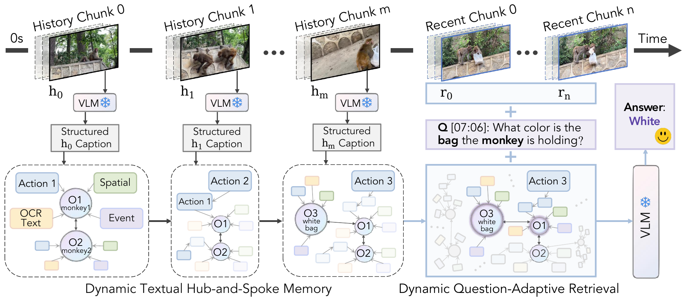
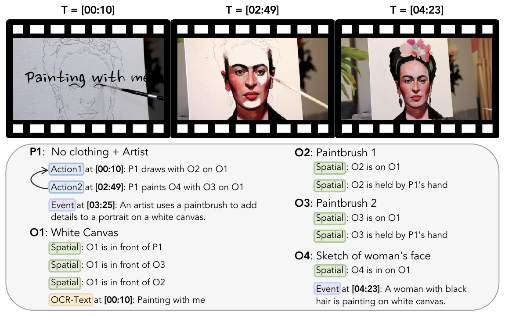

“Remembering is not the re-excitation of innumerable fixed, lifeless and fragmentary traces. It is an imaginative reconstruction, or construction.”
— Frederic C. Bartlett
Abstract
Streaming video understanding requires answering questions at arbitrary times over a continuously growing visual stream. The central challenge is to compactly remember long-range history while effectively retrieving question-relevant evidence.
We propose D-HSM (Dynamic Hub-and-Spoke Memory), a training-free framework that represents distant history as structured textual memory while preserving recent frames as visual tokens for fine-grained perception. D-HSM turns selected historical chunks into typed textual observations and stores them in an entity-centered hub-and-spoke memory, with entities as hubs and related evidence as spokes. To answer a question, it dynamically retrieves a compact question-aware subset, expands it through hub-and-spoke links, and combines it with the recent visual window for frozen-VLM prediction.
Across streaming and long-video benchmarks, D-HSM consistently and substantially improves VLM backbones and outperforms state-of-the-art online and offline baselines.
The Memory Problem
Existing streaming methods mostly ask which past visual tokens to keep. That leaves open a harder pair of questions about how the retained history should be represented and queried.
Flat captions are segment-level summaries with no explicit links among recurring entities, actions, and relations across time. D-HSM answers with structured, entity-centered semantic memory.
Real-time questions are best answered from the recent window alone; adding history can distract. Backward and temporal questions need earlier evidence. D-HSM answers this with question-adaptive retrieval.
A simple diagnostic motivates the design. Starting from a recent-frames-only baseline, appending historical video tokens is less effective than converting the same segments into textual traces, but flat text still isn’t enough, which is why D-HSM structures it as a graph and queries it adaptively.
Method
D-HSM handles the asymmetry between voluminous history and the detail-rich present: distant history is stored as compact textual memory, while the recent window stays as visual frames for fine-grained perception. No parameters are trained.
Construction & update (in three stages). D-HSM (i) selects a bounded, dynamically-budgeted set of historical chunks, (ii) converts each into a fixed-schema typed observation via a frozen VLM, and (iii) integrates them into an entity-centered hub-and-spoke graph — linking entities, merging repeated facts, connecting co-occurring entities and ordered actions, and removing evidence whose supporting chunks are dropped.
Each chunk becomes typed evidence, not a caption:
Dynamic hub-and-spoke retrieval. A lightweight keyword gate skips retrieval for explicitly current-state questions. Otherwise D-HSM ranks memory entries by query similarity and, instead of a fixed top-K, truncates at the most salient score gap, keeping only the high-similarity prefix. Selected entries are expanded through hubs, co-occurrence, and next-action chains, then linearized and passed to the frozen VLM with the recent frames.
Hub-and-Spoke Memory
Recurring entities become persistent hubs with stable identifiers; their actions, spatial relations, OCR text, and events attach as timestamped spokes. Evidence about the same entity accumulates, merges, and stays localizable across time.

Results
| Model | Size | #Frames | Overall |
|---|---|---|---|
| Human | – | – | 91.5 |
| Proprietary models | |||
| GPT-4o | – | 64 | 73.3 |
| Claude 3.5 Sonnet | – | 20 | 72.4 |
| Gemini 1.5 Pro | – | 1 fps | 75.7 |
| Open-source offline | |||
| LLaVA-OneVision | 7B | 32 | 71.1 |
| Qwen2.5-VL (baseline) | 7B | 1 fps | 73.7 |
| Open-source online | |||
| TimeChatOnline | 7B | 1 fps | 75.4 |
| Streamforest | 7B | 1 fps | 77.3 |
| Qwen2.5-VL + D-HSM | 7B | 20+4 | 82.5 |
| Qwen2.5-VL + D-HSM | 7B | 20+8 | 84.7 |
| Qwen3-VL + D-HSM | 8B | 20+4 | 83.1 |
| Qwen3-VL + D-HSM | 8B | 20+8 | 85.4 |
“20+n” = 20 historical frames for memory construction + n recent frames for perception. Full per-task breakdown (OP/CR/CS/ATP/EU/TR/PR/SU/ACP/CT) is in the paper.
| Model | Size | Real-Time | Backward | Forward | Overall |
|---|---|---|---|---|---|
| Human Agents | – | 93.2 | 92.3 | 92.9 | 92.8 |
| Proprietary models | |||||
| GPT-4o | – | 64.5 | 60.8 | 53.4 | 59.5 |
| Gemini 1.5 Pro | – | 69.3 | 62.5 | 57.2 | 63.0 |
| Open-source online | |||||
| Streamforest | 7B | 61.2 | 52.0 | 52.5 | 55.6 |
| Streamo | 7B | 67.4 | 49.2 | 57.0 | 57.9 |
| Qwen2.5-VL + D-HSM (20+4) | 7B | 79.0 | 62.8 | 58.5 | 66.8 |
| Qwen2.5-VL + D-HSM (20+8) | 7B | 79.0 | 58.5 | 59.2 | 65.6 |
| Qwen3-VL + D-HSM (20+4) | 8B | 81.6 | 61.3 | 53.8 | 65.6 |
| Qwen3-VL + D-HSM (20+8) | 8B | 79.5 | 61.1 | 54.7 | 65.1 |
D-HSM adapts its evidence use — leaning on recent frames for current-state questions while retrieving history for backward / temporal ones. Highlighted values are best among the non-human entries shown.
| Model | Size | LongVideoBench | MLVU | VideoMME |
|---|---|---|---|---|
| Proprietary | ||||
| GPT-4o | – | 66.7 | 64.6 | 71.9 |
| Gemini 1.5 Pro | – | 64.0 | – | 75.0 |
| Open-source online | ||||
| Streamforest | 7B | – | 69.6 | 61.9 |
| TimeChatOnline | 7B | 57.7 | 65.4 | 62.5 |
| D-HSM (Qwen2.5-VL) | 7B | 60.7 | 67.3 | 63.9 |
D-HSM with Qwen2.5-VL and 4 recent frames. Highlighted values are best among the open-source online models shown, not against the proprietary rows. Beyond streaming, the hub-and-spoke memory is an effective compact representation for long-range offline evidence.
Citation
@inproceedings{jiang_dhsm,
title = {Dynamic Hub-and-Spoke Memory for Streaming Video Understanding},
author = {Jiang, Xinru and Zhao, Lin and Xiao, Xi and Zhang, Yunbei and
Wang, Janet and Ma, Chenrui and Li, Haolin and Wang, Yanzhi and
Gong, Yifan and Camps, Octavia},
booktitle = {},
year = {},
url = {https://oshikaka.github.io/DHSM/}
}
Venue and year to be filled in once the camera-ready details are final.